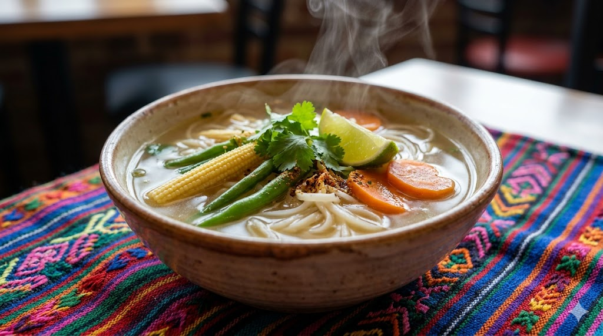
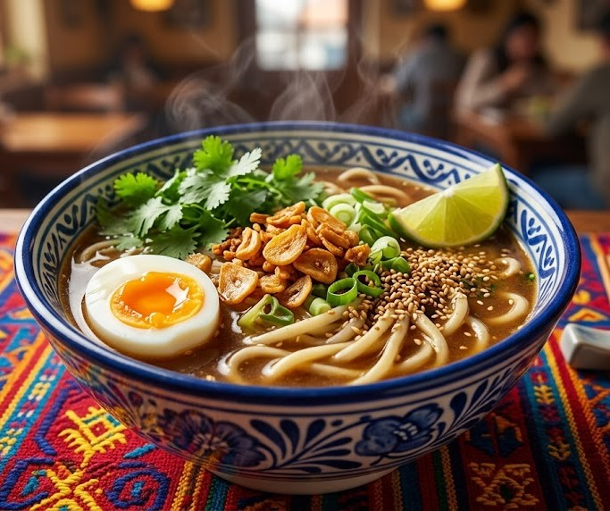
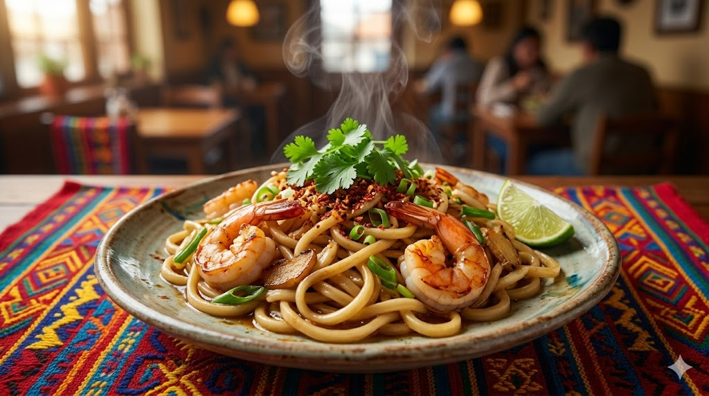

Nuestra Carta
Entradas y Sopas

Sopa de arroz cremosa con jengibre y pollo criollo
.png)
Rollitos de huevo con vegetales frescos del mercado y soya artesanal.
.png)
Panes al vapor rellenos de frijol negro volteado y un toque de panela, uniendo la técnica asiática con el dulce chapín.

Caldo ligero con fideos de arroz y legumbres frescas traídas directamente del altiplano.
Especialidades al Wok
.jpeg)
Fideos de trigo salteados con el sofrito tradicional de la madre fundadora y vegetales crujientes. .
.jpeg)
Trozos de cerdo crujiente con piña fresca de Escuintla y chile pimiento, en una salsa roja vibrante
.jpeg)
Combinación de arroz salteado con jamón, huevo y el "toque secreto" que sabe a hogar.
.jpeg)
Pechuga de pollo glaseada con soya y miel pura de abejas local, servida con arroz blanco.

Receta robusta de fideos en caldo de larga cocción con huevo duro y ajo dorado, ideal para el clima frío.

Camarones grandes del puerto salteados con fideos, jengibre y cebollín fresco.
Bebidas
.jpeg)
nfusión fría de té verde jazmín aromatizada con semillas de cardamomo cobanero y un toque de miel.
.jpeg)
Nuestra famosa horchata de arroz con canela, servida con perlas de tapioca negra, uniendo lo mejor de dos mundos en un vaso.
.jpeg)
Infusión caliente de jengibre fresco picante, endulzada con panela orgánica, ideal para la sobremesa.
.jpeg)
Té verde matcha japonés batido con limón real y hielo triturado, una opción refrescante y energética.
Repostería
.jpeg)
Pastelitos de arroz pegajoso rellenos de una suave crema de leche poleada y canela.
.jpeg)
Masa de rollito primavera rellena de puré de camote dulce y coco, fritos y espolvoreados con azúcar y canela.
.jpeg)
Bizcocho suave cocido al vapor con plátano maduro y semillas de sésamo negro.
Especialidades de la Casa
.png)
Combinación de lomo de res, pollo y camarones con vegetales de temporada, sazonados con una reducción de soya y un toque de chile pasa.
.png)
Fideos gruesos udon en una salsa cremosa de maní tostado y especias, decorado con cilantro fresco y cebollín.